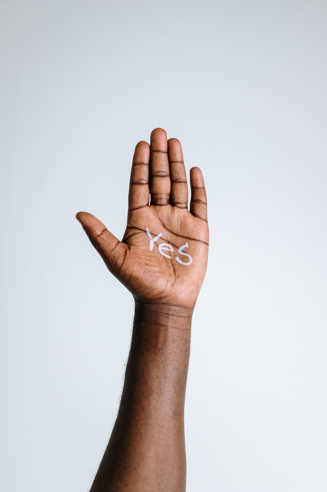

Was ist mein Angebot?
Ich biete Sexualberatung an. Sie haben ein Anliegen aus Ihrer Sexualität – etwas, das Sie verändern oder entwickeln möchten. Ob es um lustvolle Paar- oder Solosexualität geht, um Reflexion der eigenen sexuellen Biographie oder Unklarheiten, wie sexuelle Fantasien in die Realität umgesetzt werden können: Ich begleite Sie bei dem Prozess, unterstütze Sie bei der Analyse des Status quo und gestalte mit Ihnen Wege, um Ihr Anliegen zu erfüllen.
Wer macht das Angebot?
Mein Name ist Nils Rusche, ich bin Absolvent des Masterstudiengangs Sexologie an der Hochschule Merseburg. Meine Beratung basiert auf neuesten wissenschaftlichen Erkenntnissen über Sexualität, Intimität und Geschlecht. Ich arbeite mit einem modernen Verständnis des Ansatzes Sexocorporel, welcher Körper und Geist gemeinsam und ganzheitlich betrachtet.
Für wen ist das Angebot?
Ich arbeite mit Menschen aller Orientierungen und Identitäten und in allen Partnerschaftskonstellationen. Ich begrüße die Vielfalt von Sexualität in der Beratung, ob mit hoher, niedriger oder gar keiner Lust, ob klassisch oder experimentell – die Lösungen, die wir erarbeiten, sind immer individuell und passend für Sie und Ihre einzigartige Sexualität.
Wie arbeite ich?

Sexualberatung nach Sexocorporel findet im Dialog statt. Im Kern der Beratung steht Ihr Anliegen. Gemeinsam erarbeiten wir ein Verständnis, wie Ihr sexuelles Anliegen entsteht, und welche Veränderungsmöglichkeiten Sie haben. Wir betrachten Ihre Sexualität dabei ganzheitlich – sowohl die körperlichen Elemente als auch die Gedanken und Gefühle hierzu. Die sexuelle Biographie spielt ebenso eine Rolle wie (sofern vorhanden) die mit Partner*innen und anderen Personen erlebte Sexualität. Die Beratung bezieht nicht nur den Geist über das Gespräch ein, sondern kann – sofern für das Anliegen passend – auch Körperübungen beinhalten. Diese finden immer bekleidet und ohne Berührung statt.
Für viele Anliegen ist bereits in wenigen Sitzungen ein Weg gefunden, und auch schon eine einzelne Beratung kann dabei helfen, neue Perspektiven aufzuzeigen. Ich lade Sie herzlich zu einem kurzen, kostenlosen Telefonat ein, falls Sie unsicher sind, ob Ihr Anliegen in meiner Sexualberatung gut aufgehoben ist. Sofern möglich, verweise ich gern an Fachleute, deren Qualifikationen besser zu Ihrem Anliegen passen.
Was sind die Rahmenbedingungen?
Eine Sitzung dauert 50 Minuten und kostet 80 Euro. Die Bezahlung erfolgt im Nachgang per Überweisung oder PayPal. Doppelsitzungen sind auf Anfrage möglich. Leider übernehmen die Krankenkassen keine Kosten für Sexualberatungen.
Die Beratungen finden entweder in den Räumen von Desafinado in unmittelbarer Nähe des Bahnhofs Berlin-Ostkreuz oder in einer Online-Videosprechstunde über die kostenfreie und sichere Software von RedMedical statt.
Zur Terminvereinbarung kontaktieren Sie mich bitte per Mail mit ihrer Telefonnummer und einem geeigneten Zeitfenster für einen Rückruf. Ich melde mich werktags innerhalb von 24 Stunden nach Posteingang bei Ihnen. Gerne dürfen Sie in Ihrer ersten Mail bereits kurz Ihr Anliegen darstellen.
Nils Rusche
Lenbachstraße 16, 10245 Berlin-Friedrichshain nils.rusche[at]posteo.de